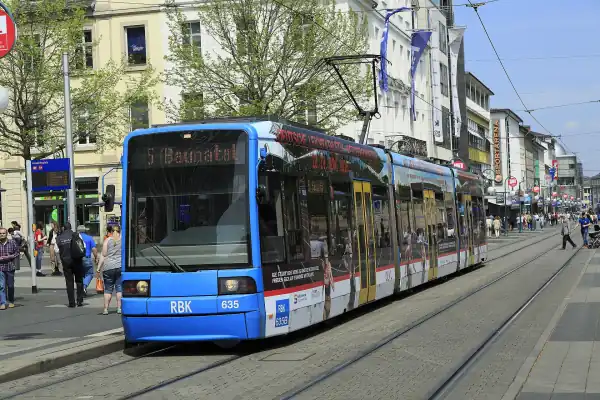

Start / Bus und Bahn
Aaron Schiele
geprüft am
geprüft am
Welche Linie fährt wohin?
| Ziel | Linie ab Bahnhof Wilhelmshöhe | Umstieg | Fahrzeit |
|---|---|---|---|
| Herkules und Besucherzentrum | Tram 4 bis Druseltal | Bus 22 bis Herkules | 10 Min. + rund 7 Min. |
| Schloss Wilhelmshöhe, Große Fontäne | Tram 1 bis Wilhelmshöhe (Park) | zu Fuß 0,8 km | 6 Min. + 10 Min. |
| Schloss direkt | Linie 24 ab Bussteig A | – | täglich 10 bis 18 Uhr, alle 30 Min. |
| Löwenburg | Tram 1 bis Wilhelmshöhe (Park) | zu Fuß 1,7 km bergauf | 6 Min. + Fußweg |
Am Bahnhof halten die Straßenbahnlinien 1, 3, 4 und 7 sowie die RegioTram RT5. Für den Bergpark brauchst du nur die 1 und die 4.
Wie komme ich vom Bahnhof Wilhelmshöhe zum Herkules?
Mit der Tram 4 Richtung Druseltal bis zur Endhaltestelle, das dauert rund 10 Minuten. Dort steigst du in den Bus 22, der halbstündlich in etwa 7 Minuten zum Herkules hinauffährt. Die Tram 4 fährt werktags bis 20 Uhr und sonntags von 12 bis 15 Uhr alle 15 Minuten, sonst halbstündlich. Plane also die Wartezeit auf den Bus mit ein. Zurück hinunter fährt der Bus 22 an Sonn- und Feiertagen nur stündlich.
Oben stehst du direkt am Besucherzentrum und hast die ganze Stadt unter dir. Von hier läuft es sich am schönsten: bergab durch den Park, an Kaskaden, Teufelsbrücke und Aquädukt vorbei bis zum Schloss.
Wie komme ich zum Schloss und zur Großen Fontäne?

Die Tram 1 bringt dich in 6 Minuten zur Endhaltestelle Wilhelmshöhe (Park). Von dort sind es 0,8 Kilometer, rund 10 Minuten zu Fuß, bis zum Schloss. Bequemer geht es mit der Linie 24: Sie fährt täglich von 10 bis 18 Uhr alle 30 Minuten vom Bahnhof (Bussteig A) über Wilhelmshöhe (Park) bis vor das Schloss. In den kleinen Elektrobussen der Linie 24 gibt es keinen Ticketautomaten, kauf dein Ticket also vorher, am einfachsten in der App.
Lieber zu Fuß? Vom Bahnhof bis zum Schloss sind es 2,6 Kilometer, gut eine halbe Stunde.
Was ist an Wasserspieltagen anders?
Vom 1. Mai bis 3. Oktober laufen mittwochs, sonntags und an hessischen Feiertagen die Wasserspiele. Dann fährt zusätzlich der Bus 23 alle 10 bis 30 Minuten von Wilhelmshöhe (Park) über Druseltal zum Herkules, und die Tram 1 fährt von 10.30 bis 17.15 Uhr alle 15 Minuten. Der Bergparkshuttle pendelt von 10 bis 17 Uhr vom Parkplatz Wilhelmshöhe zum Schloss, zu den unteren Stationen und zur Löwenburg, die einfache Fahrt kostet 2 Euro.
Unser Rat für diese Tage: mit Tram 1 und Bus 23 hinauf zum Herkules, dann dem Wasser zu Fuß bergab folgen und an Wilhelmshöhe (Park) wieder in die Tram steigen. So musst du keinen Meter bergauf laufen.
Welches Ticket brauche ich?
| Ticket | Preis | Gut für |
|---|---|---|
| Einzelfahrkarte Stadt Kassel | 3,40 Euro, unter 18 Jahren 2,10 Euro | eine Fahrt im Stadtgebiet |
| MultiTicket Single Stadt Kassel | 8,30 Euro | eine Person, 24 Stunden |
| MultiTicket Stadt Kassel | 11,40 Euro | bis 5 Personen, davon höchstens 2 ab 18 Jahren, 24 Stunden |
| KasselCard | 10 Euro (24 Std.), 14 Euro (72 Std.) | 1 bis 2 Personen, Bus, Tram und Zug im KasselPlus-Gebiet |
Das MultiTicket gilt ab Freitag 14 Uhr das ganze Wochenende. Die KasselCard lohnt sich, wenn du auch in den Herkules, die Löwenburg oder die Grimmwelt willst: Dort und bei über 30 weiteren Partnern bekommst du Ermäßigung, dazu auf die Führung zu den Wasserspielen.
Mit dem Deutschlandticket fährst du in allen Bussen und Trams im NVV ohne Aufpreis, also auch zum Herkules. Kinder unter 7 Jahren, die noch nicht zur Schule gehen, fahren in Begleitung kostenlos mit, ebenso Fahrrad und Hund. Für nur eine kurze Strecke von bis zu vier Haltestellen ohne Umsteigen reicht die Kurzstrecke für 2,20 Euro.
Wie komme ich abends zurück?
Die letzte Tram 1 verlässt Wilhelmshöhe (Park) laut Fahrplan 2026 um 23.06 Uhr, auch an Sonn- und Feiertagen, und ist um 23.15 Uhr am Bahnhof Wilhelmshöhe. Ab Druseltal fährt die Tram 4 sonn- und feiertags zuletzt um 23.34 und 23.59 Uhr. Vom Herkules hinunter fährt der Bus 22 an Sonn- und Feiertagen zuletzt regulär um 19.21 Uhr bis Druseltal, später nur noch als Anrufsammeltaxi. Manche Fahrten der Linie 22 fahren als Anrufsammeltaxi, das du bis 15 Minuten vorher unter 0800-939-0800 bestellst. Im Dezember wechselt der Fahrplan; die aktuelle Verbindung zeigt die NVV-App.
Häufige Fragen
Wie komme ich mit öffentlichen Verkehrsmitteln zum Herkules?
Vom Bahnhof Wilhelmshöhe mit der Tram 4 bis Druseltal und von dort mit dem Bus 22 zum Herkules, zusammen knapp 20 Minuten ohne Wartezeit. An Wasserspieltagen fährt zusätzlich der Bus 23 ab Wilhelmshöhe (Park).
Welche Straßenbahn fährt nach Wilhelmshöhe?
Die Tram 1 fährt über den Bahnhof Wilhelmshöhe bis zur Endhaltestelle Wilhelmshöhe (Park) am unteren Bergpark. Die Tram 4 fährt über den Bahnhof bis Druseltal, von dort geht es mit dem Bus zum Herkules.
Wo halten die Busse am Bahnhof Wilhelmshöhe?
Die Linie 24 zum Schloss fährt am Bussteig A ab. Für den Herkules nimmst du am Bahnhof keinen Bus, sondern zuerst die Tram 4 bis Druseltal.
Kann ich mein Gepäck am Bahnhof Wilhelmshöhe lassen?
Ja, es gibt Schließfächer für 24 Stunden: klein für 3 Euro, groß für 4 Euro, bezahlt wird mit Münzen.
Wie lange brauche ich vom Hauptbahnhof zum Bergpark?
Mit dem Regionalzug fährst du in wenigen Minuten vom Hauptbahnhof zum Bahnhof Wilhelmshöhe und steigst dort in Tram 1 oder 4. Die Tram 1 hält nicht am Hauptbahnhof.
Gibt es einen Shuttle zur Löwenburg?
Nur an Wasserspieltagen: Dann fährt der Bergparkshuttle für 2 Euro vom Parkplatz Wilhelmshöhe bis zur Löwenburg. An anderen Tagen gehst du von der Haltestelle Wilhelmshöhe (Park) rund 1,7 Kilometer bergauf.
Fährt der Bus 22 auch außerhalb der Wasserspieltage?
Ja, der Bus 22 fährt nach normalem Fahrplan, Richtung Herkules halbstündlich; nur der Bus 23 fährt allein an Wasserspieltagen. An Sonn- und Feiertagen fährt der Bus 22 bergab nur stündlich, im Fahrplan 2026 steht die letzte reguläre Fahrt ab Herkules um 19.21 Uhr, schau vor der Fahrt kurz in die Auskunft.
Darf mein Hund mit in Bus und Tram?
Ja, im NVV fährt der Hund kostenlos mit, an der Leine. Mehr zu Regeln im Bergpark steht unter Kassel mit Hund.
Quellen abgerufen am 20.10.2026
- Stadt Kassel Anreise mit dem ÖPNV zum Bergpark · Anreise
- Hessen Kassel Heritage Wasserspiele
- KVG Fahrplan Tram 1 (2026) · Fahrplan Tram 4 (2026) · Fahrplan Bus 22 (2026) · Tickets · Flyer Linie 24 Schlossplateau
- NVV Einzelfahrkarte · Deutschlandticket · Tarifbestimmungen 2026 · MultiTicket · Abfahrtsplan Kassel Hauptbahnhof
- Visit Kassel KasselCard
- Deutsche Bahn Schließfächer Kassel-Wilhelmshöhe
- Wikipedia Bahnhof Kassel-Wilhelmshöhe
- OpenStreetMap-Routing Fußwege
Weiterlesen

Wilhelmshöhe Parkplatz
Parken am Bergpark Wilhelmshöhe: die Parkplätze am Herkules und am Schloss, Preise an normalen Tagen und Wasserspieltagen, dazu Bus und Tram.
Weiterlesen
Wasserspiele Kassel
Wasserspiele Kassel im Bergpark Wilhelmshöhe: wann sie laufen, Ablauf mit Uhrzeiten, Route vom Herkules zur Fontäne, Eintritt frei, Anreise.
Weiterlesen
Herkules Kassel
Herkules Kassel: Was das Monument ist, wann Oktogon und Plattform offen sind, was der Eintritt kostet und wie du mit Bus oder Auto hinaufkommst.
Weiterlesen